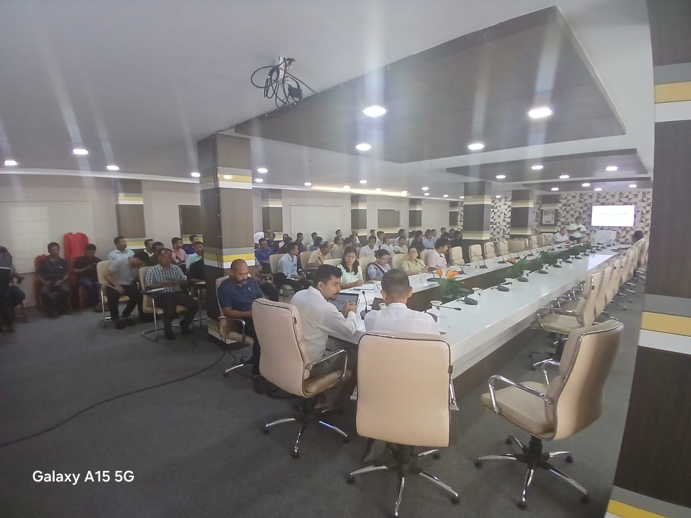
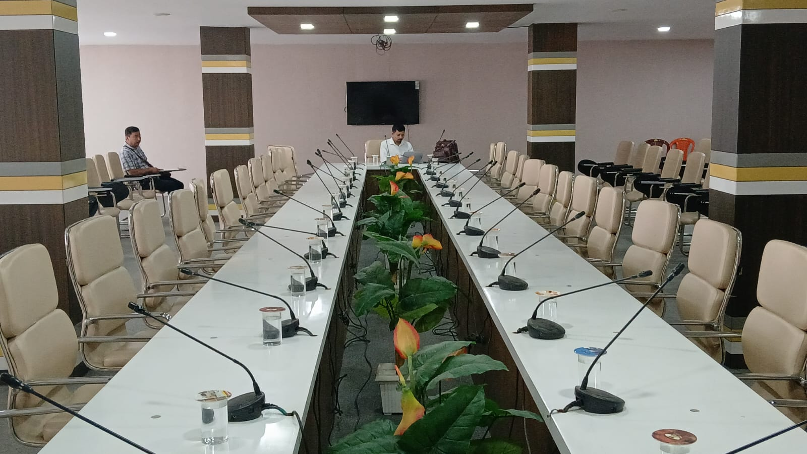

Engagements building a smarter Northeast.
A growing body of work across government and education — from financial systems to digital skills training.



Financial Management Software — KAAC
Supporting KAAC's move from fragmented financial processes to a structured, transparent and technology‑enabled management environment — covering financial data, AG/audit reporting, monitoring and decision‑making.
Computer Education
Practical computer education and introductory Artificial Intelligence training delivered at Chilarai College and Harendra Chitra College, helping students build foundational digital literacy, practical computer skills, and AI-readiness for the future.
Computer Education & AI Training — Pragati College
Practical computer education and introductory AI training conducted at Pragati College, building foundational digital and AI-readiness skills among students.
How do you choose which projects to take on?
We look for organisations ready to move from manual, fragmented processes toward structured, intelligent systems — whether that's a government body, an educational institution or a business.
Can you share more detail on the KAAC engagement?
The Karbi Anglong Autonomous Council project covers financial data management, AG/audit report generation, monitoring and decision‑support — replacing fragmented financial processes with a structured, transparent system.
Do you take on smaller institutional projects too?
Yes — our computer training programs with colleges across Assam are a good example of smaller, recurring institutional engagements alongside larger government systems.
How can I discuss a similar project?
Reach out through the contact page, by email — we'll respond with next steps for your specific process.
Have a system worth transforming?
Let's talk about where your process is today — and where it could go.
Get in touch